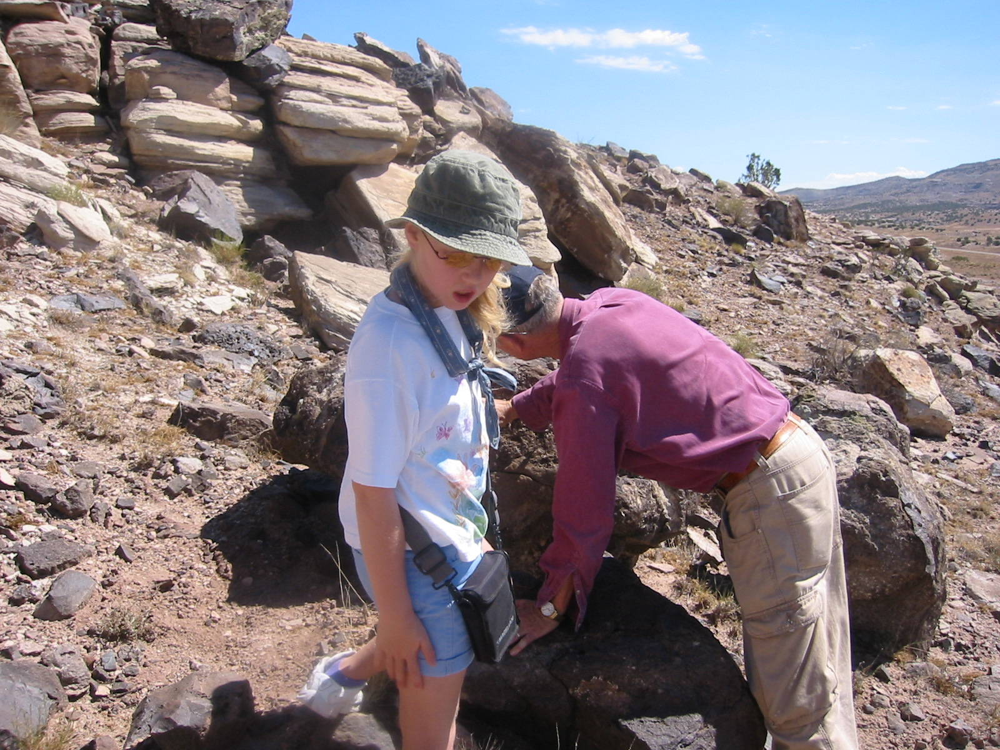
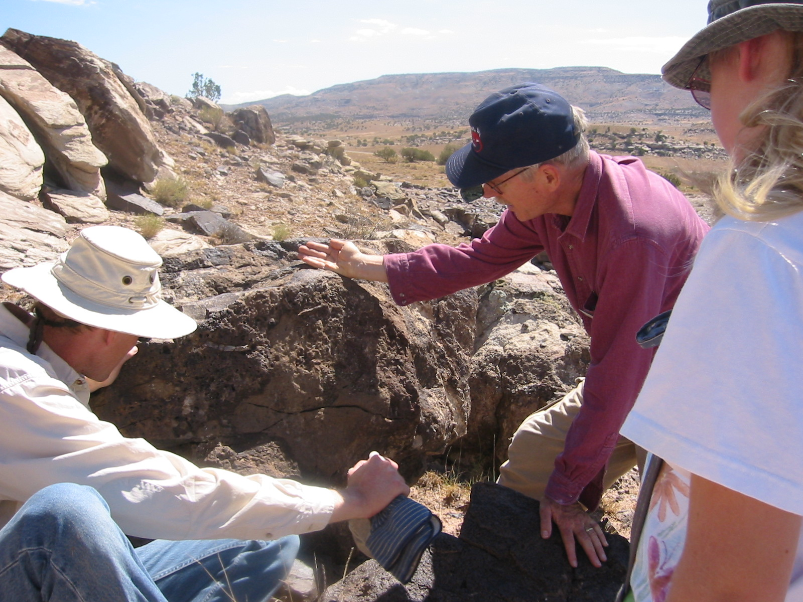

Text Above
Why nuts are shaped the way they are

They started out most round but a few had spikes

A nut cracker enjoy crushing the round nuts
The spikey nuts survive to produce more spikey nuts
They don't worry about nut crackers anymore
Text Below